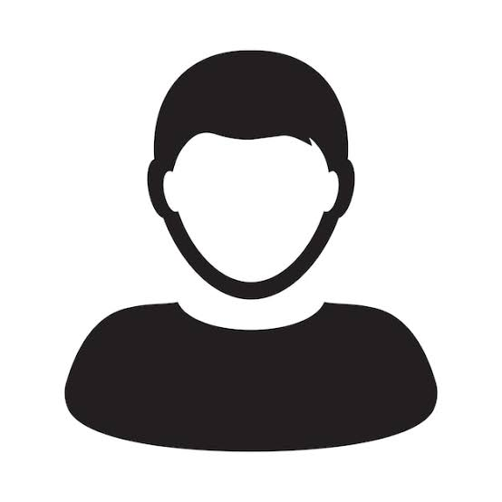

Personal Website
Jaewoong Yoon
A simple home for my profile, selected work, and CV. I am interested in building clear, useful software and learning in public.

About
Background and focus
I use this site as a concise profile and portfolio. It is designed to stay lightweight, readable, and easy to maintain on GitHub Pages.
Update this section with your current role, research interests, technical focus, or the kind of work you want visitors to notice.
Work
Selected highlights
-
Project or research highlight
Add one short sentence about a project, paper, internship, or class work that shows what you can do.
-
Technical focus
List the tools, topics, or systems you are currently learning or using most often.
CV
Resume and details
My CV is available as a PDF and can be opened or downloaded from the link below.